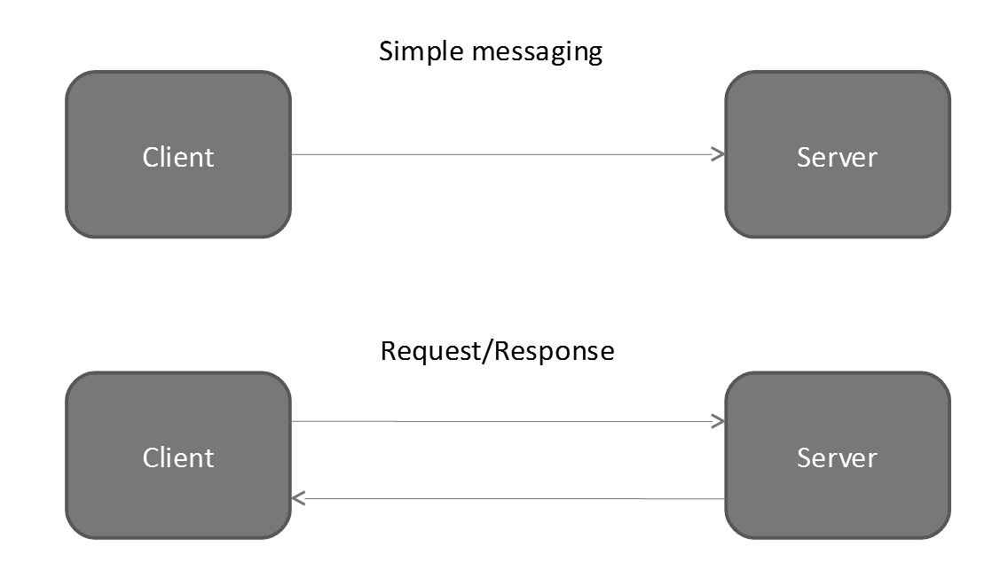
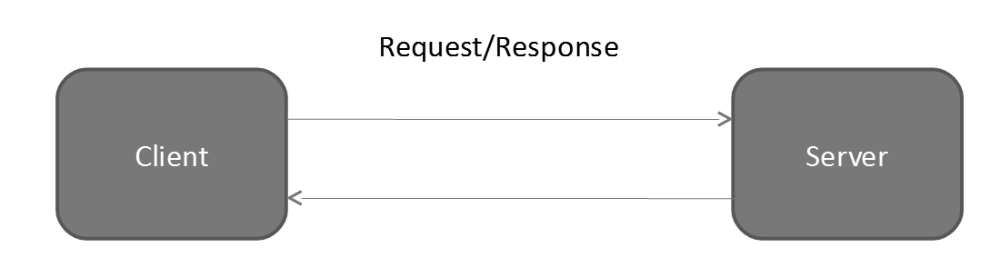

Functional Programming in F#
Part IV — Distributed and Concurrent Programming
Steven Gilham
Based on material developed in collaboration with Will Harwood and Laurence Jordan and presented in 2008

|
Course Overview
|
Distributed and Concurrent Programming
Side-effects and state
|
|
Distributed and Concurrent Programming
|
State
Concept
Assignment & References
C# and Java variables are references — they name a box that contains a value of a given type.
F# has an explict form for this, the type | |
We get the value out of the box like | |
and change the value by |
Concept
mutables
Values can also be declared mutable.
let mutable state' = 0;;We get the value out of the box like
state';;and change the value by
state' <- 1Locally persistent state
Encapsulation without objects
Consider the function
let gen f =
let i = ref 0
fun () -> (i := !i + 1; f !i);;The function gen produces a generator over f, with repeated calls yielding 1, 4, 9, 16, ...
This is the first impure function we've written.
Shared references
Given the function
let hd (x::xs) = x;;
let tl (x::xs) = xs;;we can write a mutable queue as
let stream init =
let state = ref init
let put x = (state := (!state)@[x])
let get () = let r = hd !state
state := tl !state
r
let isEmpty () = !state = []
(put, get, isEmpty);;which given an initializing list, provides functions to manipulate the queue.
Exercise 4.1
This is a naïve implementation — the behaviour of put is linear in the number
of elements in the queue. Immutable queues are implemented as pairs of lists with occasional list
reversals leading to amortized constant time to flow an item through the queue.
Rewrite stream to use such an implementation.
Simple Concurrency
Simple Concurrency
The problem with shared mutable state comes when multiple concurrent operations attempt to modify the state, rendering its output, or worse, its actual internal state, inconsistent.
It is easy to launch a function to execute on its own thread by
open System.Threading;;
let spawn f = (Thread(new ThreadStart(f))).Start();;or one could use some other .net concurrency API such as Task.
Naïve remedy — Locking
We have APIs for this
let getLock () = ReaderWriterLock();;
let acquireWrite (lock:ReaderWriterLock) = lock.AcquireWriterLock(-1);;
let releaseWrite (lock:ReaderWriterLock) = lock.ReleaseWriterLock();;
let acquireRead (lock:ReaderWriterLock) = lock.AcquireReaderLock(-1);;
let releaseRead (lock:ReaderWriterLock) = lock.ReleaseReaderLock();;
let upgrade (lock:ReaderWriterLock) = lock.UpgradeToWriterLock(-1);;
let downgrade (lock:ReaderWriterLock) cookie = lock.DowngradeFromWriterLock(cookie);;These operations block indefinitely, so prevent data races while offering the opportunity for deadlock instead.
A Concurrent Queue
With the lock operations, we can modify our queue to use a lock to manage access to the shared state, placing a write lock around the mutations and a read lock around the other accesses:
let stream' init =
let state = ref init
let lock = getLock()
let put x = acquireWrite lock
state := (!state)@[x]
releaseWrite lock
let get () =
let r = ref None
acquireRead lock;
if !state = []
then releaseRead lock
!r
else let u = ref (upgrade lock)
r := Some(hd !state)
state := tl !state
downgrade lock u;
releaseRead lock
!r
(put, get);;This style of code is of course not safe against exceptions that unwind the stack while a lock is being held.
Concept
option 'a
This is the standard form of the Maybe type from the first talk.
It is defined as
type 'a option = None | Some of 'a;;In the queue example, offering the None result from get is an atomic replacement
for an isEmpty/get call pair.
Asynchronous Composition
We can connect two functions, producer and consumer, by a stream thus:
let ( ||> ) f g =
let (put,get) = stream' []
let rec loop1 () = put( f ())
loop1 ()
let rec loop2 () =
match get() with
None -> ()
| Some(x) -> g x
loop2 ()
spawn loop1
spawn loop2;;
// for example:
let pp i = printfn "a number %d" i;;
(gen sq) ||> pp;;which will run printing squares until you halt the environment.
Concept
Tail recursion
You might expect that eventually the program would crash with a stack overflow, with all the recursive calls, but it won't.
let rec loop1 () = put( f ())
loop1 ()Because there is no unfinished business at the point of the recursive call (i.e. the call is in tail position), a new stack frame isn't needed.
In the .net framework, the compiler will emit a tailcall IL instruction at this point to guide the JIT process.
But it could instead restructure the recursion as an interation (as e.g. Scala on the JVM does)
Exercise 4.2
The list functions we introduced in the first talk, such as
let rec length l =
match l with
| [] -> 0
| (x::xs) -> 1 + (length xs);;were not tail recursive .
Rewrite them in tail recursive form.
Hint: use a helper function.
Functional Networking
Functional Networking
We can develop this idea further with the following concepts:
- Asynchronous composition on different computers or between different processes on the same computer.
- Make byte streams look like lists.
- Build upon the simple idea of null terminated strings as messages.
Aside: This approach is akin to that used by Erlang, though this is only a very first approximation to the Erlang model.
Two Models
Depending how we make the connections, we can either model simple one-way messaging (or asynchronous messaging if each counter-party transmits on its own schedule), or request/response (or synchronous messaging).
Developing the network model — connection as stream
Taking advantage of the .net library methods that provide a stream-oriented view on a connection, we can write helper methods
open System.Net.Sockets;;
let read (s:NetworkStream) =
let i = s.ReadByte()
if i < 0 then None else Some(byte i);;
let write b (s:NetworkStream) = s.WriteByte(b);;
let close (s:NetworkStream) = s.Close();;Developing the network model — stream as list
Choosing the simplest possible case
(* read a null terminated stream of bytes into a list *)
let rec streamToList s =
let b = read s
match b with
None -> []
| Some(x) -> if x = 0uy then [] else x::(streamToList s);;
(* write a list of bytes out as a stream *)
let rec listToStream l s =
match l with
[] -> ()
| x::xs -> (write x s; listToStream xs s);;Similarly develop string -> byte list, byte list -> string, and write
let writeString ns str = listToStream stringToBytes str ns;;
let readString ns = bytesToString (streamToList ns);;to read and write strings from the network.
Putting it all together -- An Echo Server with Client
Request/Response on a local loop-back socket
let rec echo f (sock:Socket) =
let csock = sock.Accept()
let ns = new NetworkStream(csock)
(spawn(fun () -> writeString ns (f (readString ns))) ; echo f sock) ;;
let echoOn f portnum =
let sock = new Socket(addressFamily, SocketType.Stream, ProtocolType.IP)
sock.Bind(IPEndPoint(local_host_address, portnum));
sock.Listen(backlog);
echo f sock;;
let asynchEchoOn f portnum = spawn(fun () -> echoOn f portnum);;and client
let converse portnum mess =
let client_socket = new Socket(addressFamily, SocketType.Stream, ProtocolType.IP)
client_socket.Connect(local_host_address, portnum);
let client_stream = new NetworkStream(client_socket)
writeString client_stream mess; readString client_stream;;Example
 |
|
Returns Echo::ahoy | Prints Echo::ahoy |
Wrapping up
- Q&A
The collected code from the slides including all the missing pieces of the echo server and client.